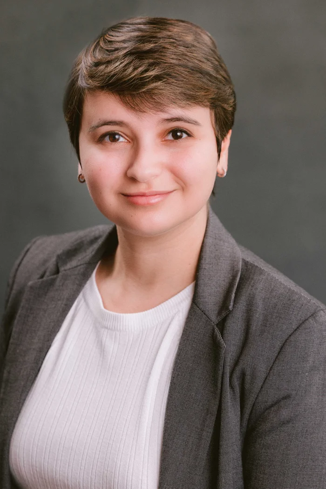

People
Principal Investigator
Rachel Ryskin
Rachel Ryskin is the lab PI & an Associate Professor in Cognitive & Information Sciences.
Research Staff
Saloni Naik
Saloni Naik is the LInC lab manager.
Graduate Students
Ellis Cain
Ellis Cain is a 5th year PhD student in Cognitive & Information Sciences.
Olivia Gawel
Olivia Gawel is a 2nd year PhD student in Cognitive & Information Sciences.

Yasemin Gokcen
Yasemin Gokcen is a 4th year PhD student in Cognitive & Information Sciences.
Tevin Williams
Tevin Williams is a 5th year PhD student in Cognitive & Information Sciences.
Undergraduate Research Assistants
Ellis Hampton
Mereal Jarjour
Jonathan Rivera Lopez
Joe Shem
Devlan Smith
Former Lab Members
Graduate
Richard Ellks, M.S. 2022 (➝ research coordinator at Stanford)
Joyce Liu, M.S. 2023 (➝ PhD student at UC Merced)
Post-bacc
Alyssa Ortega (➝ PhD Student at UW Madison)
Dulce Karina Pimentel-Hurlburt (➝ Clinical Research Coordinator Associate at Stanford)
Undergraduate
Alton Chao (➝ PhD student at Purdue University)
Nora Chen
Isaac Corona
Isabella Dohnke
Tina Fathollahi
Jacob Lawson
Jet Mejia-Bohol
Aryaan Mishra
Ma Angela Montiel (➝ PhD student at UC Santa Cruz)
Vera Nicolette-Sanchez (➝ UC Merced)
Eduardo Santiago
Renisha Singh
Sukanya Sriram
Rich Truong
Levi Williams
{kind=link}
{kind=link}
{kind=link}
{kind=link}
{kind=link}
{kind=link}
{kind=link}
{kind=link}
{kind=link}
{kind=link}
{kind=link}